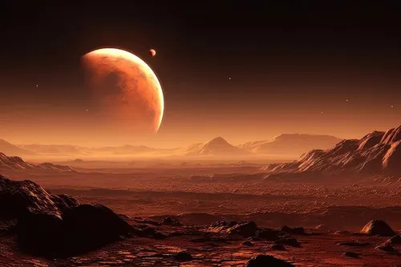
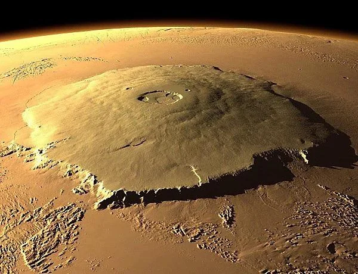
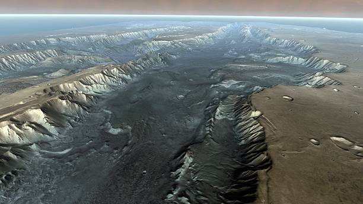

Tentang Mars Explorer

Mars Explorer adalah simulasi program wisata antariksa yang
memperkenalkan perjalanan manusia menuju Mars. Program ini dibuat
untuk menggambarkan bagaimana rasanya merencanakan perjalanan ke
planet tetangga Bumi, mulai dari keberangkatan hingga tiba di
permukaan Planet Merah.
Mars dipilih karena merupakan planet yang paling memungkinkan
untuk dikunjungi manusia setelah Bulan. Jaraknya yang relatif
dekat serta kondisi permukaannya yang masih bisa dipelajari
membuat Mars menjadi tujuan utama eksplorasi luar angkasa saat
ini.
Destinasi Wisata di Mars
Mars memiliki beberapa lokasi dengan bentang alam yang unik dan
layak dikunjungi selama misi berlangsung.
Olympus Mons

Gunung berapi terbesar di tata surya. Tingginya mencapai
sekitar tiga kali lipat Gunung Everest, menjadikannya salah
satu pemandangan paling menakjubkan yang bisa dilihat wisatawan
selama berada di Mars.
Valles Marineris

Sistem ngarai raksasa yang panjangnya melebihi lebar Amerika
Serikat. Kawasan ini cocok bagi wisatawan yang tertarik dengan
sejarah geologi dan lanskap ekstrem Planet Merah.
Persiapan Sebelum Berangkat
Perjalanan menuju Mars membutuhkan waktu sekitar tujuh hingga
sembilan bulan, sehingga setiap peserta perlu mempersiapkan diri
dengan matang sebelum keberangkatan.
Perlengkapan Wajib
Pakaian bertekanan (pressure suit), helm dengan suplai oksigen,
serta perangkat komunikasi menjadi perlengkapan dasar yang
harus dibawa setiap peserta selama berada di luar habitat.
Latihan Fisik
Karena gravitasi Mars hanya sekitar 38% dari gravitasi Bumi,
peserta menjalani program latihan fisik khusus agar tubuh
tetap kuat sebelum dan sesudah perjalanan.